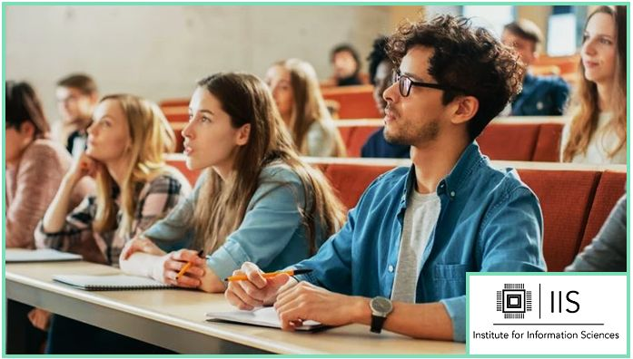

A Place for Students to Access Online Resources
Events and Programs
‣ Just because we are now online doesn't mean we can't still have events pertaining to our majors.
‣ Keep a look out for events on our events page!
- ‣ For information on the Computer Science and Cyber-security programs on campus. Check out our programs page!